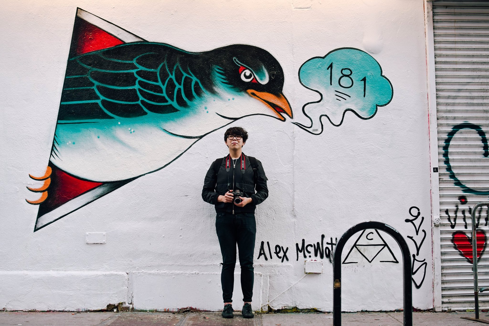

I'm a product designer from Melbourne, Australia ('straya mate!) in my senior year at UC Berkeley, where I study Applied Mathematics and Economics.

I told my friend I didn't have any pictures of myself that screamed "product designer" so she insisted on taking one of me wearing all black in front of a mural in Brooklyn.
A little about me: I was born in Melbourne on a warm day in 1997. Fifteen-and-a-bit years later, I moved halfway across the world to Berkeley, California for college, a wide-eyed Applied Math freshman.
"You're not a design student?"
You're right! Unfortunately Berkeley doesn't have a design major just yet, so instead I pursued my other academic interests (Math & Economics). At some point
I was even on track for a career in finance, until I realised that solving problems and creating meaningful experiences through crafting thoughtful products was what I really wanted to do. There's nothing quite like making a product that delights someone, so I took whatever design-related classes
I could get into, practiced constantly and read voraciously.
As of now, my process consists of first understanding the user and their journey, augmenting it with visuals, doing user testing, then iterating, iterating, and iterating. Human-centered design, if you will.
I'm also an avid videographer and motion designer. I've been shooting and editing videos for 9+ years, and founded/currently run a video and photo production team called Motion. Some highlights: working with PricewaterhouseCoopers, creating Kickstarter campaigns that have together raised over $250,000 in funding, and having work featured in publications like Mashable, Digital Trends, USA Today, and more!
When I can, I enjoy writing code too! I put this site together myself (after realising how expensive Squarespace was), I've taken Berkeley's equivalent of SICP (in Python), our data structures class (in Java), and a data analysis class (R). Over summer I even messed around with NLTK and writing a Twitter bot!
Some things I like:
eSports (TSM!)
Hip-hop music and production
Motion design and animation (ask me about After Effects!)
Arsenal FC Photo & Video (I shoot with a Sony A7ii)
Fansubbing